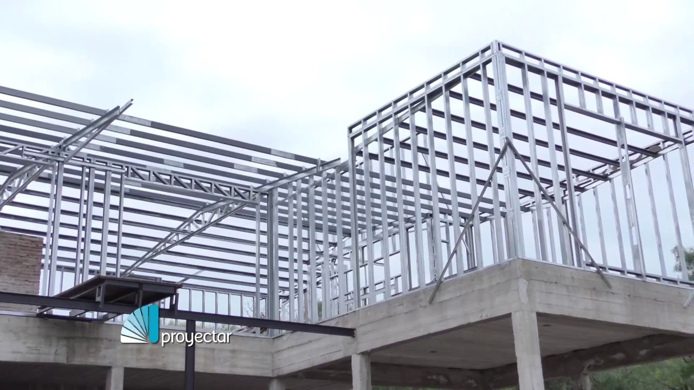
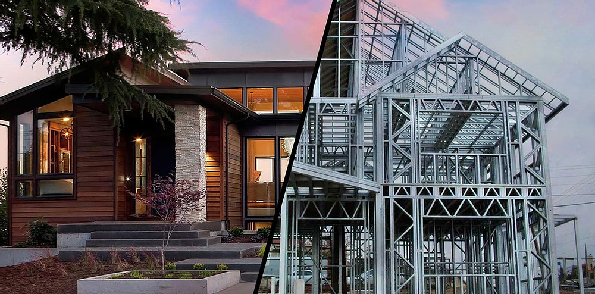

SOMOS ESPECIALISTAS EN STEEL FRAME
¿QUE ES EL STEEL FRAMING?
El Steel Framing es un sistema constructivo que reemplaza a la estructura de mampostería, hormigón, etc. por un sistema liviano y, a la vez, muy resistente, de paneles formados con perfiles de acero galvanizado liviano. Está compuesto por una cantidad de elementos o “sub- sistemas” (estructurales, de aislaciones, de terminaciones exteriores e interiores, de instalaciones, etc.) funcionando en conjunto.
¿CÓMO FUNCIONA EL SISTEMA STEEL FRAMING?
El steel framing adopta un sistema de aislación multicapa, en el cual se utilizan distintos materiales con una función y características propias, dispuestos en capas sucesivas para lograr una aislación más completa y eficiente. La aislación puede incluir: Una barrera de agua y viento. La aislación térmica.
